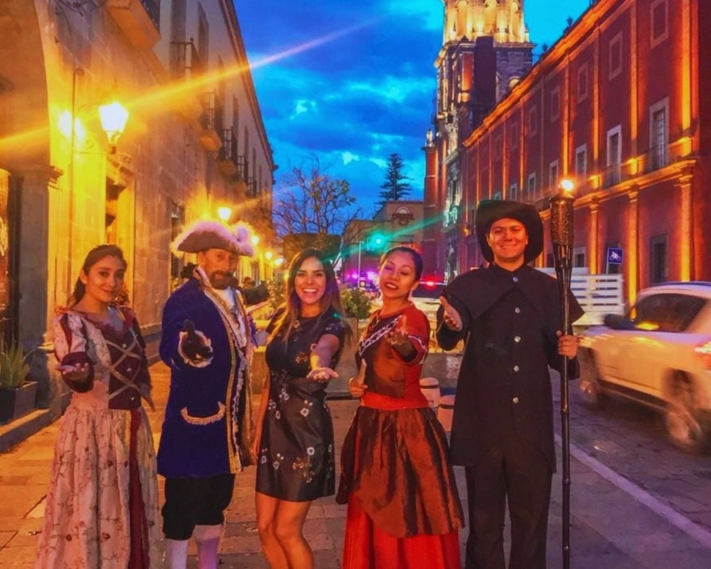
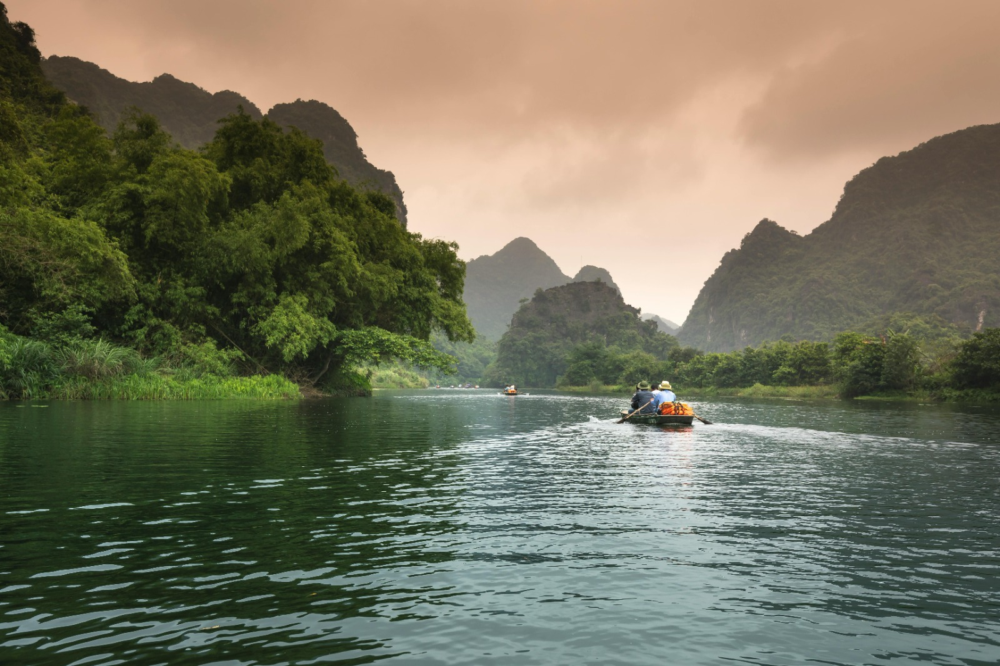
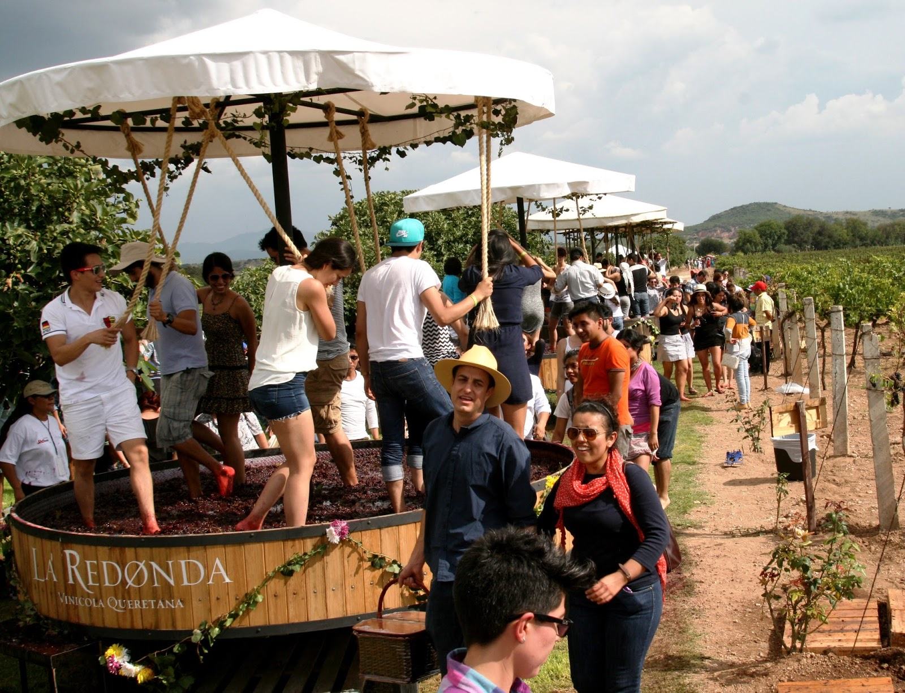

Testimonios de experiencias inolvidables

"Increíble aventura en las tierras agaveras. Explorar las antiguas destilerías y probar el tequila auténtico fue inolvidable. El paisaje declarado Patrimonio de la UNESCO es de ensueño, y el tour incluyó catas que nos transportaron a otro mundo. ¡No te lo pierdas!"
— Paola S., Guadalajara📍 Tour Tequila

"¡Una noche mágica llena de misterios! El recorrido por las calles de Querétaro con las leyendas del Marqués y la Celda de Satanás fue escalofriante y fascinante. El guía lo hizo tan vivo que parecía estar en el pasado. ¡Recomendado para amantes de la historia!"
— Fátima R., Querétaro📍 Tour de Leyendas

"Una joya cultural en el corazón de México. La colección desde el siglo XVI hasta el XX es impresionante, con obras maestras que te dejan sin aliento. El edificio histórico añade magia al recorrido. ¡Esencial para cualquier visitante a CDMX!"
— Claudia V., CDMX📍 Visita al MUNAL

"Para los amantes del vino, este tour es perfecto. Visitamos viñedos increíbles, degustamos vinos exquisitos y aprendimos sobre la producción local. La combinación de paisajes y sabores fue espectacular, ideal para una escapada romántica. ¡Volveremos!
— Luis T., Monterrey📍 Ruta del Vino